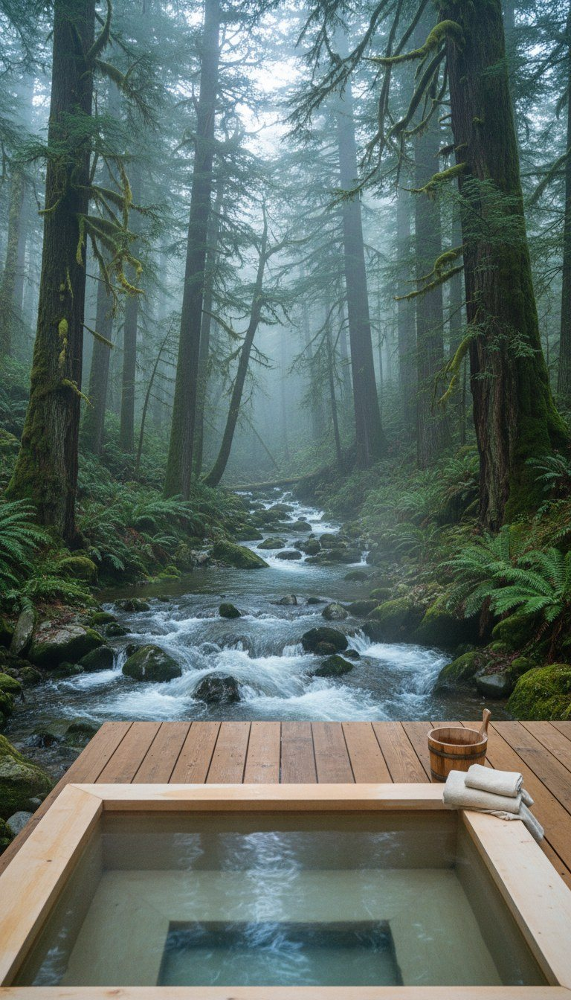

Tabouret de bain carré IPPINKA en hinoki, fabriqué au Japon
Un petit tabouret en cyprès du Japon pour se laver avant de se glisser dans le bain, comme le veut la tradition japonaise.
Voir sur AmazonMaison concept générée par IA. Ni une vraie propriété ni un vrai produit. Elle n’est ni à vendre ni à louer. Les produits suggérés plus bas sont de vraies offres Amazon, choisis dans l’esprit de la maison. Les images de cette page sont générées par IA; ce ne sont pas des photos d’un lieu réel.
Tout commence par de la vapeur. Seulement la surface d’une eau chaude dans une cuve de bois, sombre et immobile, et une volute légère qui monte dans l’air frais du matin. Le rebord est en cyprès pâle, tout lisse. Derrière, floue, une paroi de minces lattes de cèdre. On en sentirait presque l’odeur : bois mouillé, eau chaude, forêt.
La plupart des maisons sont bâties autour d’une cuisine, ou d’une vue. Celle-ci est bâtie autour d’un bain.
Certains liens de cette page sont des liens d’affiliation Amazon. Nous pouvons toucher une commission, sans frais supplémentaires pour vous.
En tant que Partenaire Amazon, je réalise un bénéfice sur les achats remplissant les conditions requises.
La salle de bain est une boîte tranquille de cèdre et de pierre sombre. Le soleil du matin entre par un écran de lattes verticales, la vapeur l’attrape, et la lumière tombe sur le plancher en minces rayons lumineux. À côté de la cuve, un seau de bois et un petit tabouret, parce que c’est ainsi qu’on prend un bain japonais : on se lave d’abord, assis sur le tabouret, et ensuite seulement on entre dans l’eau pour tremper. Rien dans la pièce n’est là pour faire joli.
Puis le bain s’ouvre sur la forêt. Une cuve carrée en hinoki repose sur une petite plateforme de cèdre suspendue au-dessus d’un ruisseau rocailleux et vif. Autour, de vieux cèdres sortent du brouillard, des troncs si larges qu’on ne pourrait pas en faire le tour avec les bras, couverts d’une mousse vert foncé. Des fougères partout. Une serviette de lin pliée au bord de la plateforme.
De la cuve, on ne voit pas du tout la maison. On voit l’eau en dessous, les arbres au-dessus, la brume entre les deux, et on entend le ruisseau. C’est le genre d’endroit où l’on perd la notion du temps.

Le rituel voyage bien, même sans la forêt. Un simple tabouret de hinoki à côté de votre propre bain change tout le rythme : on s’assoit, on se lave, on se rince, puis on trempe.
Un petit tabouret en cyprès du Japon pour se laver avant de se glisser dans le bain, comme le veut la tradition japonaise.
Voir sur AmazonLe salon est bas et calme. Du cèdre pâle aux murs et au plafond, des tatamis au sol, un sofa bas en lin, un foyer encastré dans le plancher pour les soirs froids, et une seule lanterne de papier allumée dans le coin. Tout un mur est vitré, du plancher au plafond, et de l’autre côté, il y a la forêt et le ruisseau. La pièce ressemble moins à une pièce qu’à une clairière qu’on aurait trouvée entre les arbres.
Cette seule lanterne de papier fait beaucoup. Le papier de riz transforme une ampoule en lumière douce et diffuse, comme une lampe vue à travers la brume, et c’est l’élément de cette maison le plus facile à rapporter chez soi.

Un grand abat-jour ovale en papier de riz sur une mince structure de métal, avec interrupteur au pied; ampoules non comprises.
Voir sur AmazonUne large galerie de bois, un engawa, longe la maison. Assis sur le bord, on a le ruisseau juste sous les pieds : l’eau claire glisse sur des rochers moussus et des pierres sombres et mouillées, et les cèdres sortent du brouillard sur l’autre rive. Le matin, la lumière est fraîche et douce. C’est là qu’on boirait son premier thé.
C’est seulement maintenant, passé le milieu de la vidéo, qu’on voit la maison elle-même. Depuis la rive, ce sont de longs volumes bas revêtus de cèdre, avec de profonds débords de toit et des murs de verre, une lumière chaude à l’intérieur, et la plateforme du bain qui s’avance au-dessus de l’eau. Elle ne se découpe pas sur la forêt. Elle s’y installe, basse et silencieuse, presque de la même couleur que les troncs qui l’entourent.

Puis l’heure bleue. De l’autre côté du ruisseau, chaque fenêtre brille d’une lueur ambrée. Le bain est doucement éclairé et fume encore. Quelques petites lanternes de papier pendent le long de la galerie. Toute la maison se reflète dans l’eau sombre qui court, et derrière, les cèdres s’effacent dans une brume bleue.
C’est sur cette image que la vidéo se termine, et c’est celle qui nous revient sans cesse. Pas un manoir. Une maison chaude et éclairée dans une forêt froide et tranquille, et un bain chaud qui vous attend.
Certaines maisons impressionnent. Celle-ci nous ralentit. On échangerait bien des pieds carrés pour un bain au-dessus d’un ruisseau et un mur de verre sur les cèdres.
Dites-nous en commentaire sous la vidéo si vous y emménageriez, et laquelle des cinq maisons de rêve de la semaine est la vôtre.
Les images de cette page ainsi que les visuels et la voix de la vidéo sont générés par IA. Il s’agit d’une maison concept, pas d’une vraie propriété.
Les produits ci-dessus sont des suggestions dans l’esprit de la maison; ils n’apparaissent pas dans la vidéo. Détails des produits : chaque fiche Amazon.com liée (en anglais), consultée le 23 novembre 2026 (America/Toronto).